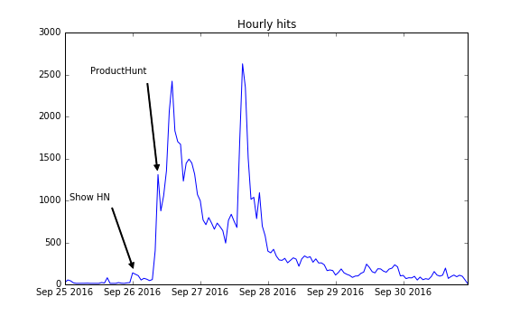

Give me a word, I'll give you some puns. Try it out here! Also available as an Alexa skill.
A few days ago, a friend was looking for a new Instagram handle. Many Instagram handles are puns (e.g. a person named Fred might have the handle "BreathOfFredAir"). I was curious to see if I could create an algorithm to find puns. Within about an hour in a Jupyter Notebook, I had something decent working. I made a website to show it off the day after, and got a decent amount of love around the internet. Here's hourly traffic numbers:

I initially posted to Show HN, then somebody posted on ProductHunt. I'm not sure what the second big spike is; feel free to email me with any theories!
In January 2018, I decided to learn something new by building a version of this as an Alexa skill. If you have an Alexa-enabled device, I would love to hear your feedback on the skill.
I'm happy to have made something that people like. For instance, here's some tweets:
Discussion on: